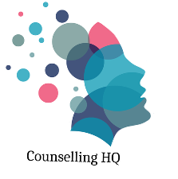

Counselling HQTherapy and counselling in Ashford, Kent and online.
In-person or online.
Whether you are seeking support for yourself, your child, or a loved one, you are in the right place. Counselling HQ is a calm and confidential space to feel understood and move forward at your own pace.
Welcome to Counselling HQ
About me
Hello, I am Natasha, though most people call me Tasha. Before training as a counsellor, I spent 24 years as a teacher, supporting children and young people aged 5 to 18 through academic pressure, emotional challenges, and major life changes.
I now work in schools and have a private practice with children and adults in short and long-term therapy. I believe in the quiet power of being truly listened to.
How I work
My approach is integrative, holistic, and person-centred. This means I tailor therapy to your unique experiences, drawing on evidence-based approaches when helpful.
Ways I can support you
There is no pressure to have the right words. You can show up feeling unsure, overwhelmed, or quiet. A free 15-minute introductory call is available.
£65 per therapeutic hour (50 minutes).
£180 when booked as a block of three or more.
Concessions available for low-waged earners and student counsellors.
Location and sessions
Cobbs Wood House, Chart Road, Ashford, Kent, TN23 1EP.
Open in Maps